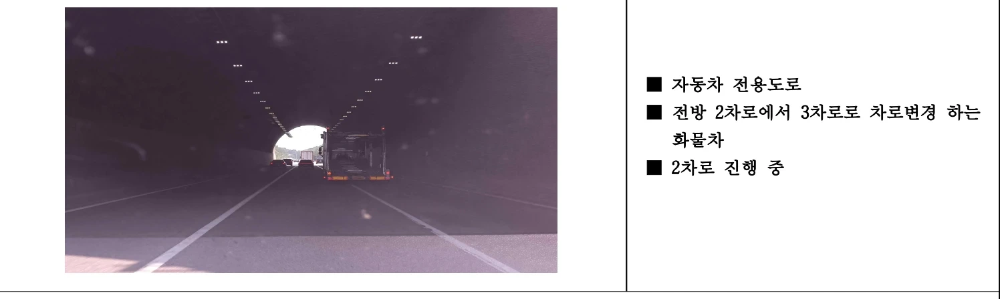

740. Hai cách lái xe nào là an toàn nhất trong tình huống sau?

- ①Chuyển sang làn đường số 1 để tránh xe chở hàng đang định chuyển làn đường.
- ②Để tránh va chạm với xe chở hàng, kiểm tra tình hình giao thông ở phía sau và giảm tốc độ lái xe.
- ③Vì đường hầm ngắn nên có thể kiểm tra được tình hình bên ngoài đường hầm ở phía trước, do đó có thể tăng tốc để nhanh chóng ra khỏi đường hầm.
- ④Bật đèn pha trước khi tiến vào đường hầm.
- ⑤Khi xe chở hàng chuyển sang làn đường số 3 làm khoảng cách với xe ô tô phía trước tăng lên, thì bám sát phía sau xe ô tô đó nhất có thể.
Xem đáp án
Đáp án
② Để tránh va chạm với xe chở hàng, kiểm tra tình hình giao thông ở phía sau và giảm tốc độ lái xe.
④ Bật đèn pha trước khi tiến vào đường hầm.
Căn cứ
Không được chuyển hướng xe ở những nơi có lắp đặt biển báo an toàn và đặc biệt cấm chuyển hướng. Bạn có thể thay đổi hướng đi ở phần đường chấm màu trắng, nhưng bạn không được thay đổi hướng đi ở phần đường liền màu trắng. Trong đường hầm cần giữ khoảng cách an toàn với xe phía trước để đề phòng tai nạn.
Phần căn cứ là bản dịch máy để tham khảo.